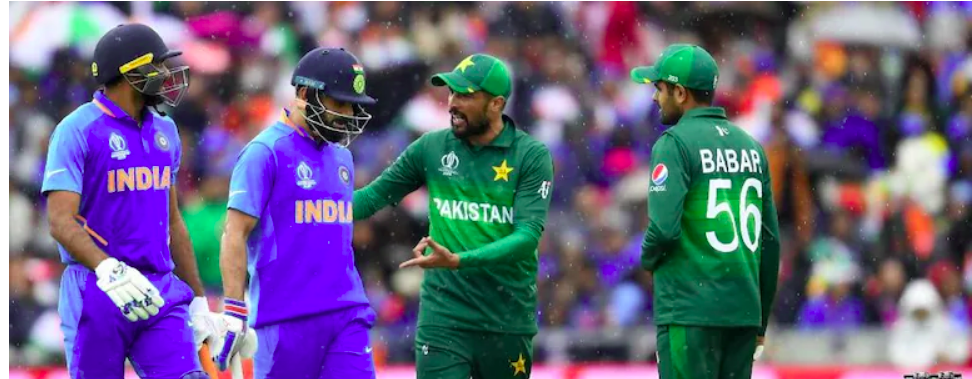
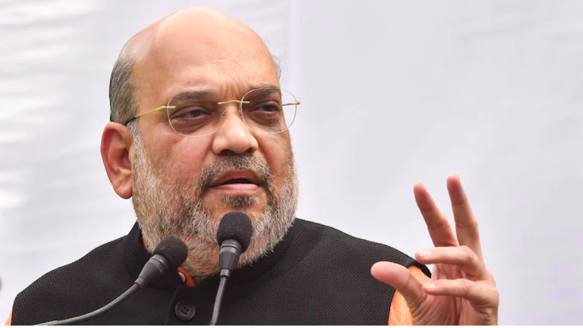
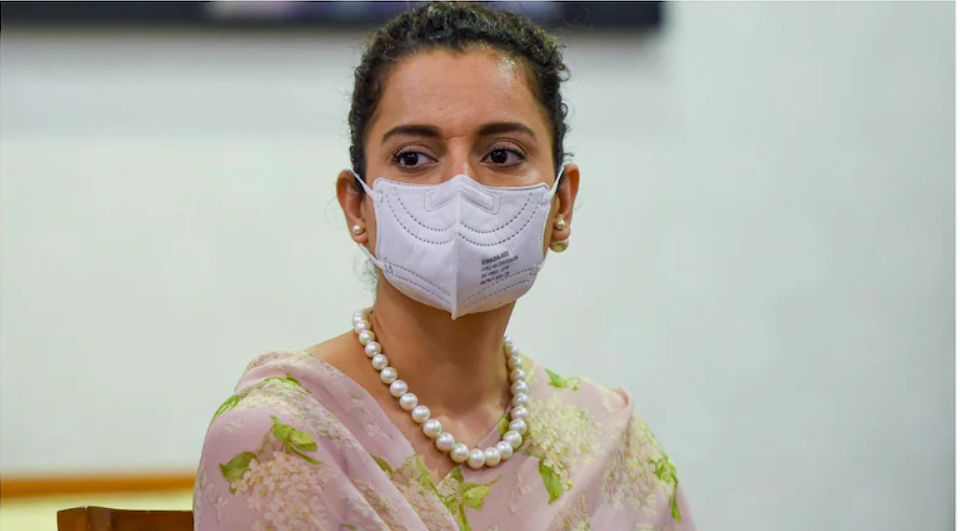
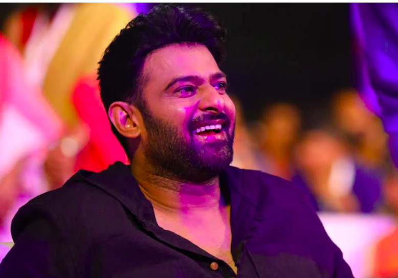
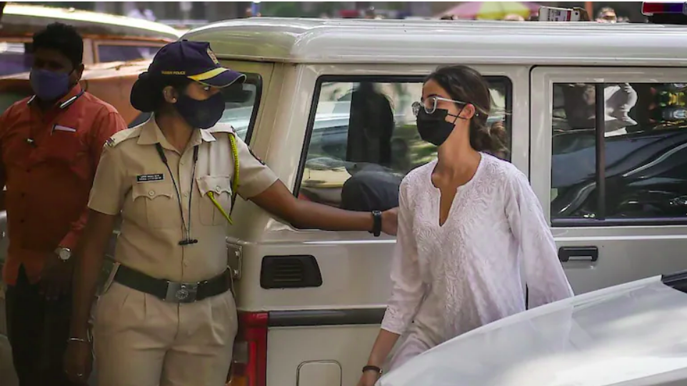

Headlines
Will investigate Amarinder Singh's friend's links with ISI

Captain Amarinder Singh is saying that there's a threat from ISI. We'll look into his journalist friend Aroosa Alam's connection with ISI. Captain kept raising drones issue coming from Pakistan for last 4.5 years," Randhawa said.
Salaam Cricket 2021: Difficult to organise Indo-Pak matches in India due to ticket demand, says Sourav Ganguly
The Board of Control for Cricket in India (BCCI) president Sourav Ganguly said organising India vs Pakistan matches becomes very difficult in India due to the massive demand for tickets which is why he found it comparatively easier to take the game to the United Arab Emirates to kick-start the T20 World Cup.
Amit Shah’s 3-day visit to J&K begins today | What’s on the agenda
This unified command meet will be attended by Intelligence Bureau chief Arvind Kumar, Director General (DG) of CRPF Kuldiep Singh, DG of National Security Guard MA Ganapathy, DG of Border Security Force Pankaj Singh, DG of J&K Police Dilbagh Singh, Army commanders and other officials. The Inspector General of Jammu Police and Inspector General of Kashmir Police will be present.
Recent News
Mumbai court rejects Kangana Ranaut’s plea seeking transfer of Javed Akhtar's complaint to different court
"It is a settled position of law that the proceeding cannot be transferred from one court to another on mere apprehension," said Additional Chief Metropolitan Magistrate ST Dande while hearing Kangana Ranaut's plea.
Prabhas turns 42. Fans celebrate Baahubali star's birthday with photos and videos
Prabhas, who is fondly called Rebel Star by his fans, is celebrating his 42nd birthday today, October 23. On this day, social media is filled with wishes from his fans, colleagues and family members. His fans have taken social media by storm by sharing photo and video tributes to him. After Baahubali's success, the actor catapulted to fame and has over five pan-India films in the pipeline.
'Not a production house': What Sameer Wankhede told Ananya Panday for arriving late at NCB office
Bollywood actor Ananya Panday was asked to appear before the agency at 11 am on Friday in connection with the NCB’s probe in the Mumbai drugs case in which Shah Rukh Khan’s son Aryan Khan was arrested earlier this month.